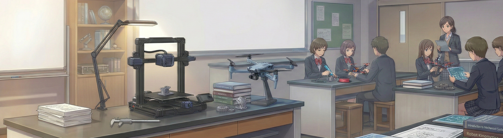

大阪府立A高校
教職トライ専門コース小中学校、高校の先生になるための素養を育てるコースです。教職に役立つ大学の講義や、地域の小学校・施設などでの実習を授業として受けることができます。
授業科目例
- 教職講義
- 国語授業理解
- 教職実習
大学や専門学校での専門分野を、高校から先取り！
将来、めざしたいことはある程度決めてるんだけど、専門的なことは大学に入ってから学ぶものだと思ってた。
目標がはっきりしているなら、府立高校でその分野を先取りできるよ。高校のうちから専門に触れておけば、大学での学びも一段と深まるんだ。
大学や専門学校で初めて専門分野に触れるよりも、
高校のうちから学び始めた方が、理解はより深まります。
府立高校の中には、
教職コースなど、専門分野に触れられる仕組みを持つ学校があります。
目標が明確な人にとっては、その分野を先取りして準備できる環境です。
一方で、まだ進路がはっきりしていない人も、
実際に体験してみることで興味や適性が具体的になります。
すべての学校にあるわけではありません。
だからこそ、将来を見据えるなら、
「先取りできる選択肢がある学校」を選ぶという視点も大切です。

「決まっている人」は一歩先へ。
「迷っている人」も、まずは体験から。
＼ 興味は、段階的に育てられる ／
幅広い分野の授業を通して、「自分は何に興味があるのか」を考える時間です。将来の進路を具体的にイメージするための土台をつくります。
見つけた興味を、専門コースで本格的に学ぶ時間です。段階的に理解を深め、将来へとつなげていきます。
＼ 興味のある分野を高校から学べる！ ／
ポイントは選べるコース・学科と
学びを深める授業
大阪府立A高校
教職トライ専門コース小中学校、高校の先生になるための素養を育てるコースです。教職に役立つ大学の講義や、地域の小学校・施設などでの実習を授業として受けることができます。
授業科目例
大阪府立B高校
映像デザイン科映像デザイン科では、広告写真や印刷等のフォトデザイン、CM・ドラマ等のビデオ、コンピューターグラフィックスの3つを柱とした映像メディア制作を通して豊かな感性を磨き、デザインの基本と応用を実践的に学びます。
授業科目例
大阪府立C高校
演劇科演劇の実習を通じて、身体と言葉を用いた豊かなコミュニケーション能力を身につけます。充実した音響、照明施設や楽屋を備える「舞台実習室」では、演劇作品の上演も可能です。
授業科目例